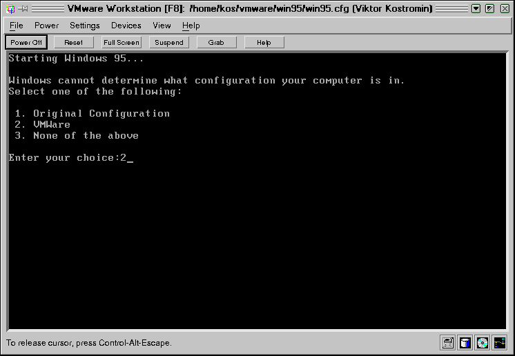

|
|
18. Система виртуальных машин фирмы VMWare:
особенности запуска ОС
с физического диска |
Если до установки системы VMware на Вашем компьютере уже были установлены две
или более операционных систем (таких как Windows 95, Windows 98, Windows NT, или
Windows 2000) и Вы использовали какой-либо из многовариантных загрузчиков для
выбора ОС при запуске компьютера, то после установки VMware естественно
возникает желание не устанавливать ОС на виртуальные диски, а запускать на
виртуальном компьютере уже установленную ОС с физического диска. Такой
возможности не было в первых версиях VMware, но теперь она имеется. Система
VMware может даже использовать загрузчики, установленные ранее на компьютере.
Загрузчик будет работать внутри VMware и даст возможность пользователю выбрать
операционную систему, запускаемую на виртуальном компьютере. Можно и заново
установить, например, Windows 98 на физический диск, а потом запускать ее в
виртуальной машине.
VMware пока что поддерживает использование реальных дисков только для IDE
устройств (в то время как файл, моделирующий виртуальный диск, может быть
расположен как на IDE, так и на SCSI диске). При работе с физическими дисками
можно использовать все три режима работы с дисками: "с записью", "без записи" и
"с отложенной записью" (смотри раздел о конфигурировании
виртуальной машины). Однако использование ОС, установленной на физическом
диске, сопряжено с некоторыми особенностями, которые надо учитывать при
настройке. В частности, в операционной системе надо создать два разных профиля
оборудования, один для ОС, запускаемой на реальном компьютере, второй - для
виртуального компьютера.
Каждая виртуальная машина состоит из следующего набора виртуальных устройств:
- Виртуальный CD-ROM
- Виртуальные IDE и SCSI жесткие диски
- Стандартный PCI графический адаптер
- Стандартный дисковод гибких дисков
- Intel 82371 PCI Bus Master IDE controller
(includes primary and secondary IDE controllers)
- BusLogic BT-958 compatible SCSI host adapter
- Стандартная 101/102-клавишная клавиатура
- PS/2-compatible mouse
- AMD PCNET Family Ethernet adapter (PCI-ISA)
- Последовательные порты COM1-COM4
- Параллельные порты LPT1-LPT2
- Звуковая карта, совместимая с Sound Blaster 16
Этот набор виртуальных устройств отличается от набора устройств реального
компьютера (за исключением некоторых устройств, например, процессора) и не
зависит от последнего. Если операционная система устанавливается непосредственно
внутри виртуального компьютера, то в процессе установки все эти устройства
корректно определяются. Если же ОС предустановлена на реальном компьютере, она
была сконфигурирована исходя из того набора устройств, который реально имелся на
этом компьютере.
Операционные системы фирмы Microsoft (включая Windows 95, Windows 98, Windows
NT 4.0) используют понятие "профиля оборудования". Каждый профиль определяет
некоторый набор известных системе устройств. Если заданы два или более профиля,
пользователю в процессе загрузки предлагается выбрать один из них.
ОС Windows 95, Windows 98 and Windows 2000 благодаря механизму Plug and Play
в процессе загрузки проверяют соответствие реальных устройств указанному профилю
оборудования. Несоответствие приводит к тому, что снова запускается механизм
определения устройств и установки драйверов. Хотя в большинстве случаев этот
процесс завершается успешно, это существенно замедляет загрузку.
Windows NT не поддерживает Plug and Play и использует профиль обрудования для
инициализации устройств. Несоответсвие реального набора тому, что указано в
профиле, вызывает выдачу сообщения об ошибке и отключение (точнее неподключение)
устройства.
Из сказанного вытекает, что для запуска одной из Microsoft-овских
операционных систем внутри виртуальной машины надо создать отдельный профиль
оборудования, чтобы упростить процесс загрузки. Поэтому процес создания и
конфигурирования виртуальной машины, которая использует операционную систему,
установленную в один из разделов физического диска, имеет некоторые отличия от
процесса создания виртуальной машины, работающей с виртуальными дисками.
- Вначале проинсталлируйте операционную систему, которую Вы хотите запускать
на виртуальном компьютере, на физический IDE диск реального компьютера
(естественно, это делать не нужно, если ОС уже была установлена ранее).
- До запуска системы VMware загрузите эту ОС (имеется в виду одна из ОС
семейства Windows) на реальном компьютере и создайте два профиля оборудования.
Для этого откройте "Панель управления", войдите в пункт "Система" и
переключитесь на вкладку "Профиль обрудования". Там уже имеется как минимум
один профиль, который называется "Текущий (Original configuration)". Щелкните
по кнопке "Копировать" и назовите новый профиль, например, "Виртуальная
машина".
- Только для Windows NT: Отключите некоторые устройства во
вновь созданном профиле. Для этого откройте пункт "Устройства" в "Панели
управления", выберите отключаемое устройство и нажмите экранную клавишу
"Остановить". Отключить необходимо аудиоплату, MIDI, джойстик, плату Ethernet
и другие сетевые, а также USB устройства (отключать их надо только во вновь
созданном профиле, не промахнитесь).
Если Вы установили и предполагаете запускать Windows 95 или Windows 98, то
отключать устройства не требуется. Они будут отключены автоматически на стадии
загрузки ОС.
- Перезагрузите компьютер и запустите Linux (если Вы используете VMware для
Linux).
- Убедитесь, что раздел физического диска, который отведен для использования
операционной системой виртуального компьютера, не смонтирован в Linux. Удалите
или закомментируйте соответствующую строку в файле /etc/fstab, а в
даннном сеансе размонтируйте этот раздел из командной строки.
- Установите права доступа к разделам жесткого диска.
Разделы жесткого
диска, с которых происходит запуск операционных систем в виртуальных машинах,
должны быть доступны как по чтению, так и по записи для пользователей, которые
запускают систему VMware. В большинстве дистрибутивов Linux физические диски
(такие как /dev/hda, /dev/hdb) принадлежат группе
disk. Если это так, то можно просто добавить пользователей системы
VMware в эту группу. Можно также просто поменять владельца устройства.
Пожалуйста, тщательно продумайте вопросы безопасности при выборе способа
предоставления доступа к дискам.
Самый простой и вполне приемлемый способ заключается в том, чтобы дать
пользователям системы VMware доступ ко всем физическим устройствам
/dev/hd[abcd], которые содержат операционные системы или загрузчик, а
в вопросах разграничении доступа положиться на конфигурационные файлы VMware.
Таким образом обеспечивается доступ для загрузчика к файлам, необходимым для
запуска операционных систем (например, LILO требуется доступ по чтению к файлу
/boot в разделе Linux для запуска операционных систем, отличных от
Linux, которые могут быть расположены на других разделах или других дисках).
- Сконфигурируйте виртуальную машину под вновь установленную операционную
систему (используя Мастер
конфигурации или Редактор конфигурации).
При выполнении процедуры конфигурации для реальных дисков учтите следующие
моменты:
- При выборе типа виртуального диска выберите пункт "Existing Partition".
- Для раздела диска, в котором находится соответствующая операционная
система, установите опцию "read/write" (для этого надо щелкнуть мышкой по
экранной клавише "Partitions..." в окне Редактора конфигурации,
соответветующем нужному жесткому диску). Для основной загрузочной записи
(Master boot record - MBR) и для других разделов диска(ов) рекомендуется
дать право только на чтение (read only), поскольку, например, загрузчик LILO
для загрузки операционной системы должен иметь возможность прочитать файл
/boot из Linux-раздела.
Примечание: Еще раз напомним, что если позволить виртуальной
машине производить запись в раздел, который одновременно смонтирован в
файловой системе Linux, то возможны непредвиденные последствия (смотри
раздел Предостережения.
Поэтому прежде чем позволять виртуальной машине производить запись в раздел,
убедитесь, что этот раздел не смонтирован в Linux на базовом компьтере.
- Запустите VMware и проверьте созданную конфигурацию.
Для этого можно
дать команду vmware <config-file>, где <config-file>
- это полный путь к конфигугационному файлу, созданному Мастером конфигурации
(имена таких файлов оканчиваются на .cfg. Можно также дать просто
команду vmware и открыть файл конфигурации через меню "File/Open".
Откройте пункт меню "Settings > Configuration Editor" и убедитесь в том,
что в конфигурации IDE - дисков указан хотя бы один файл описания диска (raw
disk description file). Имена этих файлов имеют вид
<configuration-name>.hda, <configuration-name>.hdb,
и т.д.
VMware использует специальный файл описания для каждого физического IDE
устройства. Этот файл описания содержит информацию о правах, которая служит
для управления доступом виртуальной машины к каждому разделу на физическом
диске. Этот механизм позволяет предотвратить случайные попытки запустить
операционную систему, уже запущенную на базовом компьютере, внутри виртуальной
машины, или запустить внутри виртуальной машины ОС, для которой эта ВМ не была
сконфигурирована. Этот же файл описания также предотвращает случайную запись
на физический диск со стороны в чем-то неправильно работающих ОС или
приложений.
Можно провериь и другие опции конфигурации, особенно такие, для которых Вы
приняли значения по-умолчанию -- например, Вы можете изменить значение объема
памяти, выделяемой виртуальной машине.
- Включите питание виртуальной машины (кнопка "Power On").
Система
VMware запускает Phoenix BIOS, после чего считывается главная загрузочная
запись загрузочного диска (master boot record - MBR).
Если Вы сконфигурировали систему с использованием нескольких IDE дисков,
VMware BIOS будет пытаться произвести загрузку ОС с этих дисков в следующей
последовательности:
- Primary Master
- Primary Slave
- Secondary Master
- Secondary Slave
Если у Вас несколько SCSI-дисков, VMware BIOS производит загрузку в порядке
номеров SCSI устройств.
Если в Вашей системе сконфигурированы как SCSI, так и IDE диски, VMware
BIOS сначала пытается загрузить ОС со SCSI-устройств, затем - с IDE-дисков.
Опрос устройств производится в той же последовательности, как было сказано
выше.
Порядок обращения к дискам в процессе загрузки можно изменить через пункт
меню "Boot" в Phoenix BIOS виртуальной машины. Для этого после включения
питания VMware нажмите клавишу F2, чтобы попасть в меню BIOS.
- Если у Вас установлено несколько операционных систем (многовариантная
загрузка), то выберите нужную ОС тем же способом, как Вы делали это до
установки системы VMware (из меню, предлагаемого при загрузке).
- В процессе загрузки ОС должно появиться меню выбора конфигурации (если,
кончно, Вы создали отдельный профиль оборудования для виртуального
компьютера):

Рис. 18.70Введите номер, соответствующий конфигурации
виртуального компьютера (в ситуации, изображенной на рисунке, это будет 2) и
нажмите клавишу [Enter]. В процессе дальнейшей загрузки ОС Вы получите
некоторые сообщения об ошибках и дополнительные задержки в процессе загрузки,
но это нормально.
- Только для Windows 2000: После того, как Вы запустите
Windows 2000 (в качестве ОС на виртуальном компьютере) Вы увидите диалоговое
окно "Найдено новое оборудование" (Found New Hardware) в котором предлагается
установить новый драйвер для видео-контроллера. Этого делать не нужно.
Щелкните по кнопке "Отмена" (Cancel) для того, чтобы закрыть диалоговое окно и
откажитесь от предлагаемой перезагрузки компьютера. Windows 2000 автоматически
обнаружит и установит драйвер для сетевой карты AMD PCnet PCI Ethernet.
После этого Вы должны установить пакет VMware Tools для Windows (на
виртуальном компьютере). После того, как будет установлен SVGA-драйвер от
фирмы VMware, Inc. (входящий в состав пакета VMware Tools для Windows),
перезагрузите ОС Windows 2000 на виртуальной машине. После перезагрузки Вы
можете поменять разрешение экрана у виртуальной машины ("Свойства
экрана/Параметры").
Если Вы хотите использовать звуковую карту, работая с ОС Windows 2000 на
виртуальном компьютере, прочитайте руководство по ее подключению на сайте
фирмы: VMware
and Sound.
Только для Windows 95/98: Вы увидите диалоговое окно
"Обнаружено новое оборудование". Windows предложит Вам проивести поиск
драйверов для него. Для большинства устройств драйверы уже установлены при
инсталляции системы, однако в некоторых случаях может понадобиться
установочный CD-ROM диск. Windows попросит Вас несколько раз перезагрузиться
при установке новых драйверов.
В некоторых случаях Windows может не распознать CD-ROM диск, когда выдается
запрос на поиск драйверов. В таком случае рекомендуется попытаться указать в
качестве пути к драйверу каталог C:\windows\system\ или отказаться от
установки драйвера данного конкретного устройства . Подключение таких
устройств может быть выполнено позже, после того, как система начнет правильно
распознавать CD-ROM.
Кода Windows установит виртуальные устройства и драйверы для них, надо
удалить из системы неработающие устройства, соответствующие реальному
оборудованию. Для этого используйте вкладку "Панель управления > Система
> Устройства". Выберите неработающее устройство и щелкните по клавише
"Удалить". Только учтите, что нужно предварительно выбрать профиль
оборудования, соответствующий виртуальному компьютеру, чтобы не удалить
устройства, работающие при запуске ОС с физического диска.
Только для Windows NT: После завершения загрузки ОС
просмотрите протокол загрузки, чтобы определить те устройства, которые не
подключились. Вы можете отключить их в профиле "Виртуальный компьютер",
используя менеджер устройств ("Панель управления > Устройства").
- Убедитесь, что все виртуальные устройства работают корректно, особенно
сетевые адаптеры. Помните, что состав оборудования виртуального компьютера
существенно отличается от набора устройств, реально имеющихся на Вашем
физическом компьютере.
Только для Windows 95/98: Если какое-то виртуальное
устройство отсутствует, воспользуйтесь опцией "Панель управления > Добавить
новое оборудование".
- Установите VMware Tools
(если Вы еще не сделали этого). Пакет VMware tools будет запускаться в обеих
конфигурациях оборудования, но окажет какое-то влияние на работу только в
конфигурации "Виртуальный компьютер".
Примечания: 1. Когда Вы в следующий раз загрузите Windows в реальном
компьютере, использовав профиль оборудования, соответствующий реальной
конфигурации аппаратуры, в списке устройств могут появиться некоторые
виртуальные устройства. Вы можете удалить их или отключить тем же самым
способом, который был описан выше для отключения реальных устройств из профиля
оборудования, соответствующего виртуальному компьютеру.
2. Если Вы при задании конфигурации виртуального компьютера установили для
реального диска режим "с отложенной записью" (undoable), то при перезагрузке ОС
Вы должны будете либо согласиться с тем, чтобы все операции с диском,
проделанные внутри виртуальной машины были сохранены на диске, либо отказаться
от сохранения изменений.Дело в том, что в этом режиме все операции с диском
фактически только запоминались в специальном файле .redo, а реальной записи на
диск не проводилось. Подробнее о режимах работы дисков смотри в разделе "Конфигурирование
виртуальной машины".